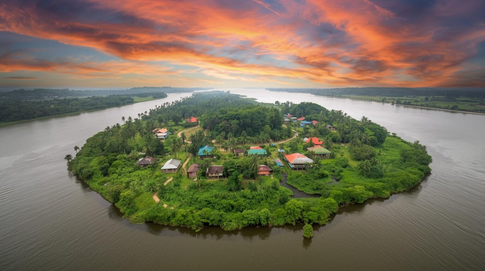

Majuli Island
Lose yourself in the ethereal beauty of Majuli, the world’s largest freshwater river island tucked away in the mighty Brahmaputra. Majuli has been the cultural capital of Assamese civilization since the 16th century, shaped by the neo-Vaishnavite movement led by Saint Srimanta Sankardeva. Explore the ancient Sattras (monasteries) where monks preserve centuries-old traditions of mask-making, pottery, and the classical Sattriya dance. From watching golden sunsets over the river to cycling through tribal Mising villages, Majuli offers a soulful retreat where time seems to stand still.